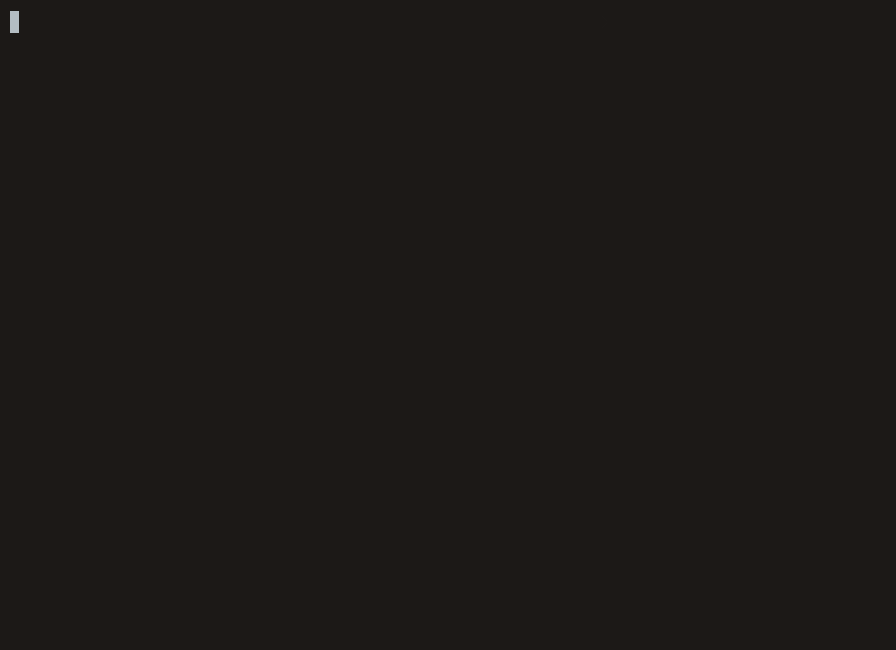

Goa brings full LLM transparency, multi-agent collaboration, and a rich ANSI TUI to any OpenAI-compatible model — with no opaque black boxes.
Goa is a terminal-native AI coding agent. It gives you a full-featured chat interface in your terminal, powered by any OpenAI-compatible LLM. Every thought, every tool call, every result is visible — no hidden context, no surprises.

A complete agentic toolkit built on small, composable primitives — the way Go intended.
Works with any OpenAI-compatible endpoint: OpenAI, llama.cpp, LM Studio, Ollama, and more.
Read, write, edit, search, bash, SSH, background execution, git utilities — all transparent.
Embedded to home to project to local to environment to CLI overrides — predictable precedence.
Built-in coder, planner, and reviewer profiles — compose your own via inheritance.
Reusable prompt templates — inline system-prompt injection or sub-agent execution mode.
Pair (planner to coder) and reviewer (coder to reviewer) collaboration pipelines.
Extend Goa with JavaScript via the Goja runtime — custom tools, commands, and UI.
Differential-rendering ANSI UI: chat, thinking stream, tool ledger, side panels, modals.
The agent asks structured clarifying questions answered on the input line, not guessed at.
Full JSONL session history with /save and /restore — resume any conversation.
Self-contained ZIP bundle via /export with events, logs, config, and issue description.
Small primitives and factories over fat per-type APIs — the codebase is built to extend.
From keystroke to LLM token, every byte path crosses a clearly separated layer.
No accounts, no API keys to us — just Go, your model endpoint, and your terminal.
$git clone https://github.com/pijalu/goa$cd goa && make build$./goaGrab the latest build from the GitHub Releases page for your platform.
Every layer of Goa is documented, from high-level architecture down to individual tools.